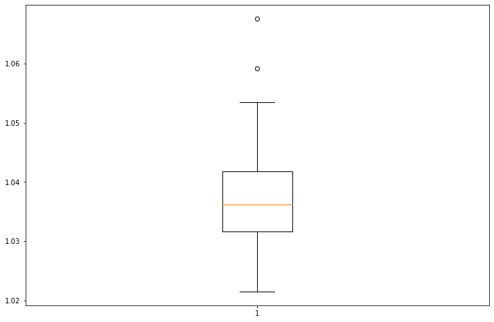
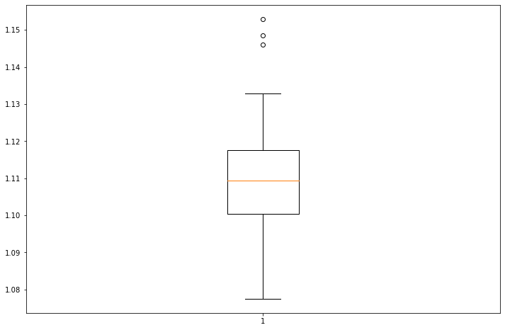
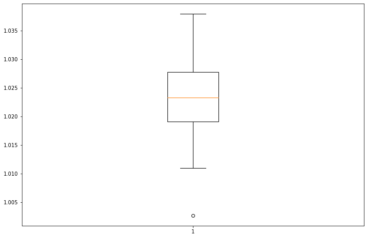
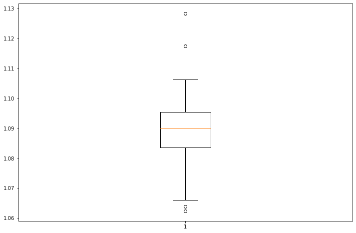
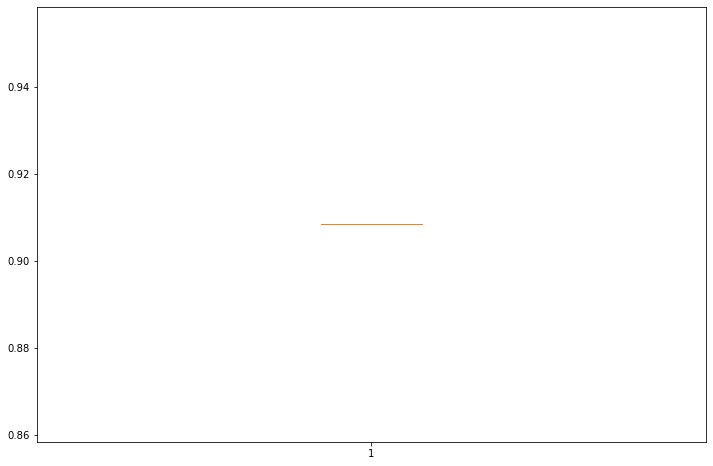
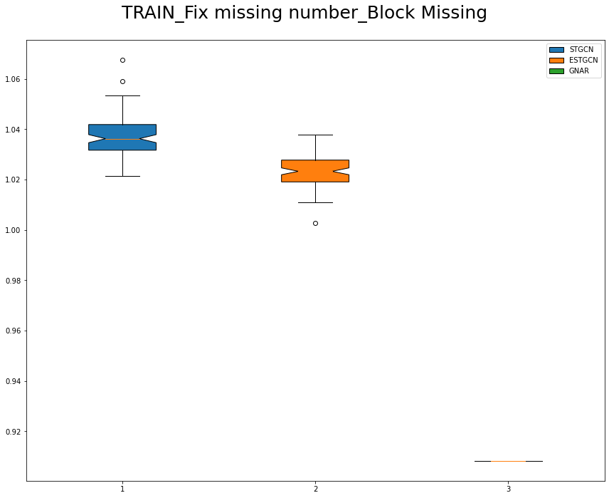
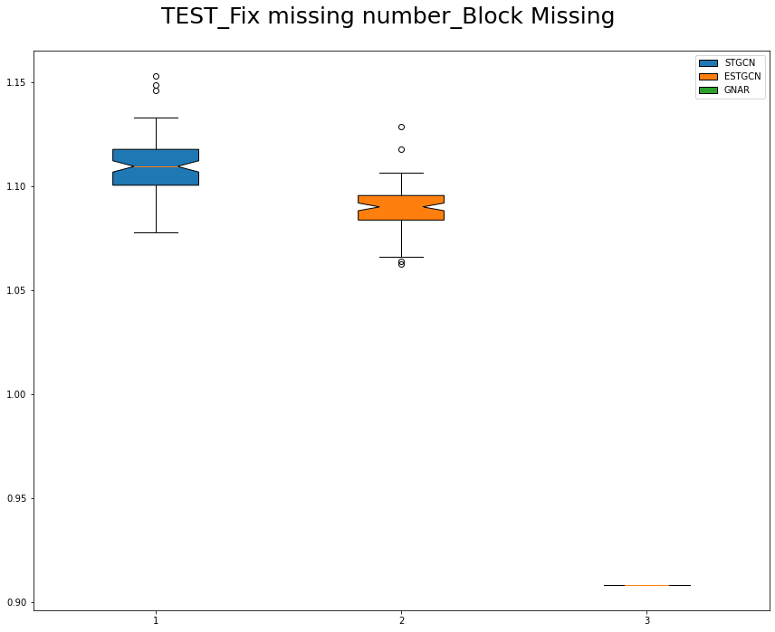

import numpy as np
import pandas as pd
import matplotlib.pyplot as plt
from matplotlib import animation
# torch
import torch
import torch.nn.functional as F
from torch_geometric_temporal.nn.recurrent import GConvGRU
# scipy
from scipy.interpolate import interp1d
# utils
import time
import pickle
from tqdm import tqdm
# rpy2
import rpy2
import rpy2.robjects as ro
from rpy2.robjects.vectors import FloatVector
from rpy2.robjects.packages import importr
import rpy2.robjects.numpy2ri as rpyn
import rpy2.robjects as robjectsGNAR fiveNet,fivenodes lag 1
import
class RecurrentGCN(torch.nn.Module):
def __init__(self, node_features, filters):
super(RecurrentGCN, self).__init__()
self.recurrent = GConvGRU(node_features, filters, 2)
self.linear = torch.nn.Linear(filters, 1)
def forward(self, x, edge_index, edge_weight):
h = self.recurrent(x, edge_index, edge_weight)
h = F.relu(h)
h = self.linear(h)
return hmy functions
def load_data(fname):
with open(fname, 'rb') as outfile:
data_dict = pickle.load(outfile)
return data_dictdef save_data(data_dict,fname):
with open(fname,'wb') as outfile:
pickle.dump(data_dict,outfile)def plot(f,*args,t=None,h=2.5,**kwargs):
T,N = f.shape
if t == None: t = range(T)
fig = plt.figure()
ax = fig.subplots(N,1)
for n in range(N):
ax[n].plot(t,f[:,n],*args,**kwargs)
ax[n].set_title('node='+str(n))
fig.set_figheight(N*h)
fig.tight_layout()
plt.close()
return figdef plot_add(fig,f,*args,t=None,**kwargs):
T = f.shape[0]
N = f.shape[1]
if t == None: t = range(T)
ax = fig.get_axes()
for n in range(N):
ax[n].plot(t,f[:,n],*args,**kwargs)
return figdef make_Psi(T):
W = np.zeros((T,T))
for i in range(T):
for j in range(T):
if i==j :
W[i,j] = 0
elif np.abs(i-j) <= 1 :
W[i,j] = 1
d = np.array(W.sum(axis=1))
D = np.diag(d)
L = np.array(np.diag(1/np.sqrt(d)) @ (D-W) @ np.diag(1/np.sqrt(d)))
lamb, Psi = np.linalg.eigh(L)
return Psiebayesthresh = importr('EbayesThresh').ebayesthreshdef trim(f):
f = np.array(f)
if len(f.shape)==1: f = f.reshape(-1,1)
T,N = f.shape
Psi = make_Psi(T)
fbar = Psi.T @ f # apply dft
fbar_threshed = np.stack([ebayesthresh(FloatVector(fbar[:,i])) for i in range(N)],axis=1)
fhat = Psi @ fbar_threshed # inverse dft
return fhatdef update_from_freq_domain(signal, start, end, node):
signal = np.array(signal)
T,N = signal.shape
signal_trimed = trim(signal)
signal[start:end,node] = signal_trimed[start:end,node]
return signaldata 정리
- 데이터정리
data = load_data('./data/fivenodes.pkl')edges_tensor = torch.tensor(data['edges'])
fiveVTS = np.array(data['f'])
nonzero_indices = edges_tensor.nonzero()
fiveNet_edge = np.array(nonzero_indices).T
T = 200
N = 5 # number of Nodes
E = fiveNet_edge
V = np.array([1,2,3,4,5])
t = np.arange(0,T)
node_features = 1
edge_index = torch.tensor(E)
edge_attr = torch.tensor(np.array([1,1,1,1,1,1,1,1,1,1]),dtype=torch.float32)- train / test
fiveVTS_train = fiveVTS[:int(len(fiveVTS)*0.8)]
fiveVTS_test = fiveVTS[int(len(fiveVTS)*0.8):]BLock Missing Values
class Missing:
def __init__(self,df):
self.df = df
self.number = []
def miss(self,start = 50,end = 150,node = 2):
self.missing = self.df.copy()
self.start = start
self.end = end
self.node = node
self.missing[self.start:self.end,self.node] = float('nan')
def first_mean(self):
self.train_mean = self.missing.copy()
self.train_mean[self.start-1:self.end,self.node] = np.mean(self.df[:(self.start-1),self.node].tolist()+self.df[self.end:,self.node].tolist())
def second_linear(self):
self.train_linear = pd.DataFrame(self.missing)
self.train_linear.interpolate(method='linear', inplace=True)
self.train_linear = self.train_linear.fillna(0)
self.train_linear = np.array(self.train_linear).reshape(int(len(self.df)),N)STGCN
- missing rate: 80%
- 보간방법: linear
stgcn_train1 = []
stgcn_test1 = []
_zero = Missing(fiveVTS_train)
_zero.miss(50,150,2)
_zero.second_linear()
missing_index = _zero.number
interpolated_signal = _zero.train_linear
X = torch.tensor(interpolated_signal).reshape(int(T*0.8),N,1).float()[:int(T*0.8-1),:,:]
y = torch.tensor(interpolated_signal).reshape(int(T*0.8),N,1).float()[1:,:,:]
XX = torch.tensor(fiveVTS_test.reshape(int(T*0.2),N,1)[:-1,:,:]).float()
yy = torch.tensor(fiveVTS_test.reshape(int(T*0.2),N,1)[1:,:,:]).float()
real_y = torch.tensor(fiveVTS_train).reshape(int(T*0.8),N,1).float()[1:,:,:]
for i in range(100):
net = RecurrentGCN(node_features=1, filters=4)
optimizer = torch.optim.Adam(net.parameters(), lr=0.01)
net.train()
for epoch in range(50):
for time, (xt,yt) in enumerate(zip(X,y)):
yt_hat = net(xt, edge_index, edge_attr)
cost = torch.mean((yt_hat-yt)**2)
cost.backward()
optimizer.step()
optimizer.zero_grad()
yhat = torch.stack([net(xt, edge_index, edge_attr) for xt in X]).detach().numpy()
yyhat = torch.stack([net(xt, edge_index, edge_attr) for xt in XX]).detach().numpy()
train_mse_total_stgcn = (((real_y-yhat).squeeze())**2).mean()
test_mse_total_stgcn = (((yy-yyhat).squeeze())**2).mean()
stgcn_train1.append(train_mse_total_stgcn.tolist())
stgcn_test1.append(test_mse_total_stgcn.tolist())plt.figure(figsize=(12, 8))
plt.boxplot(stgcn_train1);
plt.figure(figsize=(12, 8))
plt.boxplot(stgcn_test1);
Enhencement of STGCN
- missing rate: 80%
- 보간방법: linear
- 결측치생성 + 보간
estgcn_train1 = []
estgcn_test1 = []
_zero = Missing(fiveVTS_train)
_zero.miss(50,150,2)
_zero.second_linear()
missing_index = _zero.number
interpolated_signal = _zero.train_linear
X = torch.tensor(interpolated_signal).reshape(int(T*0.8),N,1).float()[:int(T*0.8-1),:,:]
y = torch.tensor(interpolated_signal).reshape(int(T*0.8),N,1).float()[1:,:,:]
XX = torch.tensor(fiveVTS_test.reshape(int(T*0.2),N,1)[:-1,:,:]).float()
yy = torch.tensor(fiveVTS_test.reshape(int(T*0.2),N,1)[1:,:,:]).float()
real_y = torch.tensor(fiveVTS_train).reshape(int(T*0.8),N,1).float()[1:,:,:]
for i in range(100):
net = RecurrentGCN(node_features=1, filters=4)
optimizer = torch.optim.Adam(net.parameters(), lr=0.01)
net.train()
signal = interpolated_signal.copy()
for epoch in range(50):
signal = update_from_freq_domain(signal,50,150,2)
X = torch.tensor(signal).reshape(int(T*0.8),N,1).float()[:int(T*0.8-1),:,:]
y = torch.tensor(signal).reshape(int(T*0.8),N,1).float()[1:,:,:]
for time, (xt,yt) in enumerate(zip(X,y)):
yt_hat = net(xt, edge_index, edge_attr)
cost = torch.mean((yt_hat-yt)**2)
cost.backward()
optimizer.step()
optimizer.zero_grad()
signal = torch.concat([X.squeeze(),yt_hat.detach().squeeze().reshape(1,-1)])
yhat = torch.stack([net(xt, edge_index, edge_attr) for xt in X]).detach().numpy()
yyhat = torch.stack([net(xt, edge_index, edge_attr) for xt in XX]).detach().numpy()
train_mse_total_estgcn = (((real_y-yhat).squeeze())**2).mean()
test_mse_total_estgcn = (((yy-yyhat).squeeze())**2).mean()
estgcn_train1.append(train_mse_total_estgcn.tolist())
estgcn_test1.append(test_mse_total_estgcn.tolist())plt.figure(figsize=(12, 8))
plt.boxplot(estgcn_train1); 
plt.figure(figsize=(12, 8))
plt.boxplot(estgcn_test1); 
GNAR
%load_ext rpy2.ipythonThe rpy2.ipython extension is already loaded. To reload it, use:
%reload_ext rpy2.ipython%%R
library(GNAR)
library(igraph)
library(zoo)GNAR = importr('GNAR') # import GNAR
igraph = importr('igraph') # import igraph m = robjects.r.matrix(FloatVector([0,0,0,1,1,0,0,1,1,0,0,1,0,1,0,1,1,1,0,0,1,0,0,0,0]), nrow = 5, ncol = 5)
print(m) [,1] [,2] [,3] [,4] [,5]
[1,] 0 0 0 1 1
[2,] 0 0 1 1 0
[3,] 0 1 0 1 0
[4,] 1 1 1 0 0
[5,] 1 0 0 0 0
gnar_train1 = []
gnar_test1 = []
_zero = Missing(fiveVTS_train)
_zero.miss(50,150,2)
_zero.second_linear()
missing_index = _zero.number
interpolated_signal = _zero.train_linear
X = torch.tensor(interpolated_signal).reshape(int(T*0.8),N,1).float()[:int(T*0.8-2),:,:]
yy = torch.tensor(fiveVTS_test.reshape(int(T*0.2),N,1)[1:,:,:]).float()for i in range(100):
answer = GNAR.GNARfit(vts=robjects.r.matrix(rpyn.numpy2rpy(np.array(X).squeeze()), nrow = 160, ncol = 5),net = GNAR.matrixtoGNAR(m), alphaOrder = 2, betaOrder = FloatVector([1, 1]))
predict = GNAR.predict_GNARfit(answer,n_ahead=40)
train_mse_total_gnar = ((pd.DataFrame(GNAR.residuals_GNARfit(answer)).values.reshape(-1,5))**2).mean()
test_mse_total_gnar = ((yy.squeeze() - pd.DataFrame(predict).values.reshape(-1,5)[:-1,:])**2).mean()
gnar_train1.append(train_mse_total_gnar.tolist())
gnar_test1.append(test_mse_total_gnar.tolist())%R -o gnar_train1
%R -o gnar_test1plt.figure(figsize=(12, 8))
plt.boxplot(gnar_train1);
plt.figure(figsize=(12, 8))
plt.boxplot(gnar_test1);
Visualization
fig = plt.figure(figsize = (12,10))
ax = fig.add_subplot(111)
bp1 = ax.boxplot(stgcn_train1, positions=[1], notch=True, widths=0.35, patch_artist=True, boxprops=dict(facecolor="C0"))
bp2 = ax.boxplot(estgcn_train1, positions=[2], notch=True, widths=0.35, patch_artist=True, boxprops=dict(facecolor="C1"))
bp3 = ax.boxplot(gnar_train1, positions=[3], notch=True, widths=0.35, patch_artist=True, boxprops=dict(facecolor="C2"))
ax.legend([bp1["boxes"][0], bp2["boxes"][0], bp3["boxes"][0]], ["STGCN", "ESTGCN", "GNAR"], loc='upper right')
plt.text(x=0.5, y=0.94, s="TRAIN_Fix missing number_Block Missing", fontsize=25, ha="center", transform=fig.transFigure)
fig.tight_layout()
plt.show()
fig = plt.figure(figsize = (12,10))
ax = fig.add_subplot(111)
bp1 = ax.boxplot(stgcn_test1, positions=[1], notch=True, widths=0.35, patch_artist=True, boxprops=dict(facecolor="C0"))
bp2 = ax.boxplot(estgcn_test1, positions=[2], notch=True, widths=0.35, patch_artist=True, boxprops=dict(facecolor="C1"))
bp3 = ax.boxplot(gnar_test1, positions=[3], notch=True, widths=0.35, patch_artist=True, boxprops=dict(facecolor="C2"))
ax.legend([bp1["boxes"][0], bp2["boxes"][0], bp3["boxes"][0]], ["STGCN", "ESTGCN", "GNAR"], loc='upper right')
plt.text(x=0.5, y=0.94, s="TEST_Fix missing number_Block Missing", fontsize=25, ha="center", transform=fig.transFigure)
fig.tight_layout()
plt.show()